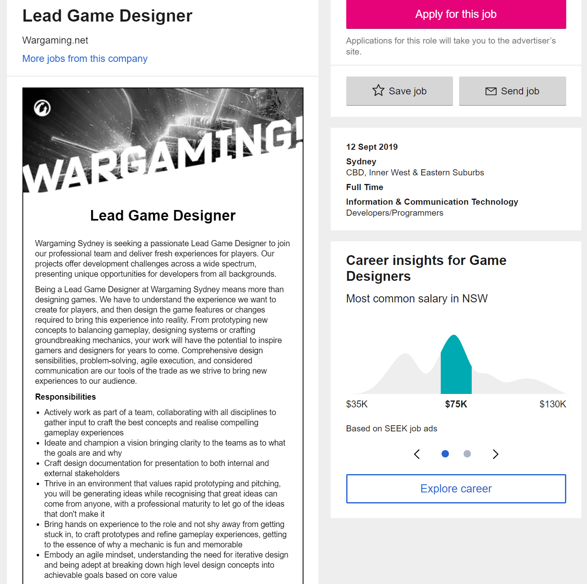
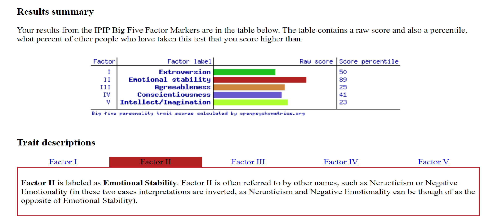

I’m a 24-year-old male who was born and raised in Queensland. Had a fairly average upbringing going to only two schools, one primary and one secondary. After graduating I did one year of University at the University of Queensland studying a Bachelor of Business which I ultimately didn’t enjoy. After this I worked for a few years as a Tennis coach for young kids and teens which was extremely rewarding. Then finally moved to Melbourne to begin my desired course and hopefully start my career.
My interest in IT is probably from growing up in this generation. Being surrounded by technology my entire life, and being a very curious person, even as a small child I was fascinated by the TV and the computer. When I think about all these things working from just a series of 1’s and 0’s always bewildered me. However my true passion for IT stemmed from video games. My first Nintendo Gameboy with Pokemon is my earliest memory of being ‘addicted’ to something. I would play that game endlessly and my parents would have to confiscate it so I would go to my after school activities. Next was my first XBOX in 2010 and playing Call of Duty with all my friends and making new ones. This happens to be my favourite aspect about IT, seeing as I am a very shy person, having that option to meet people allowed me to make many friends that I do not think I would be able to do otherwise. IT allows people to connect in a much more accessible way. However my hands on experience with the most in depth sides of IT are quite limited beyond video games. I’ve always admired from a distance until now.
I chose RMIT due to high recommendations through word of mouth mostly. I have a friend who did a very similar course through RMIT online. My Dad also attended RMIT when he was at University many years ago.
Ideally I would like to learn the more intricate parts of IT. This being areas like programming, coding, game design and how the hardware works. Game Design being my ideal career path I believe all these things would be extremely beneficial to that goal. As a secondary aspiration, or backup if you like, the idea of being a software engineer of any sort is very appealing to me. To me it’s like Lego or Bionicles, building something from scratch and making it work is something that I have always been drawn to. As a kid I would spend hours and hours using the same set of building blocks to create a plethora of things and would never be bored. This is how I see software engineering to be like. This is why I have decided to do this course, to give me the skills to follow this passion or to prove me completely wrong in my assessment.
Lead Game Designer
Job Advertisement

This position is one of leadership so it would be my job to inspire, help and direct my team to create a groundbreaking experience for the player. This position requires and Ideas man as well as someone who is versed in communication, be it to the people I work for, I works with or stakeholders in the company. The success of the product ultimately falls to me as the head of the team which requires me to conceptualise, develop and release an aspect of the product to make in memorable. This position is appealing to me on a creative level. Innovation is something that I strive for in most areas of life. Problem solving would also be a major factor in a job like this which appeals to the puzzle loving part of my brain. Even now as a hobby I try to create game concepts and think of ways that it would work or even fail. I also enjoy leading, teaching people, and seeing people succeed and being the conduit for that.
Over 6 years of experience in the industry, with time spent developing AAA titles as a leader for at least one of these titles. This gives precedent to you being a mentor, showing that you treat the people below you with enough respect to create a successful project. Must be able to thrive in a dynamic environment, able to overcome obstacles in a fast, reactive way while leading others through solutions also. Be creative with game concepts and mechanics to create an interesting and groundbreaking addition to the product for a memorable experience for the user/player. Experience in areas like Unreal, vehicular combat and ability to communicate and lead groups across time zones are also desired.
Unfortunately I’m lacking in the technical skills department. I have yet to undergo any formal training in the world of IT and that’s the main reason I enrolled in this course. I do however have experience in leading a team. Back when I played tennis I was the captain of a three man team in which I had to organise who played on certain days, match up skill levels of the player and provide encouragement to my teammates. I also taught kids,teens and young adults tennis which provided me with plenty of patience and made me a more understanding, approachable and tolerant leader. As I said I am undertaking this course in order to learn the necessary skills for a job in this field, I am also reading leadership books, and watching a lot of informative seminars online to learn outside of my studies.
MBTI Test
Personality type: Debater ENTP-T
Mind: 51% Extroverted, 49% Introverted
Energy: 66% Intuitive, 34% Observant
Nature: 54% Thinking, 46% Feeling
Tactics: 33% Judging, 67% Prospecting
Identity: 37% Assertive, 63% Turbulent
Learning Style Test
Visual Learner
Big Five Personality Test

The results of these tests seem fairly consistent and I would certainly agree
with the outcomes. I feel the result prove that I am a level headed person, can
think on my feet and do not lose my head under pressure. I almost split the
middle of introvert and extrovert which allows me to cater the both personality
types when it comes to understanding their limitations. If I were to form a
team around me, I would opt for profiles that slightly vary from mine to
provide a different point of view, but not stray to far as to cause friction
in the team.
Crimson is an action role playing game developed with Unity. Crimson will be set in a fantasy world called Auron filled with wondrous beast, many weird and wonderful races, massive and diverse biomes. You play as Han, a boy from a small village with his sights set on adventure. When he comes of age he heads out into the world to meet princess' and mages, explore mountains and jungles, cross oceans and discover new lands. He does all this with his oldest and most trusted companion Wren, a creature born of magic to help Han to fulfill his destiny.
The motivation from this comes from my childhood. reading books like Deltora Quest, Lord of the Rings and Eragon, watching movies like Star Wars, these epic adventures on a huge scale. It's been a dream of mine to create a world like those whilst also incorporating my love of gaming. This allows the user to really emerse themselves in the world and I hope they leave with a sense of wonder and awe.
Crimson, being an action role playing game similar to the likes of Final
Fantasy, KIngdom Hearts and other Japanese role playing games, will play host
to an expansive universe. Open world, though hard to pull off correctly, will
be the baseline for the game, letting the player explore at their own pace
and leisure. There will, of course, be a story aspect to the adventure in
which the player can choose to follow religiously and once finished complete
the other content the game offers, or they can completely forego the story to
go out and adventure on their own terms. This decision the player must make
is the core of any open world RPG game.
Although a player might choose to
avoid the story at first does not mean putting little to no effort in.
An amazing and engaging story go hand in hand with an awe inspiring world.
The tale of Han and Wren will be one of epic proportions with all the elements
that make a great story. Betrayal, intrigue,romance comedy and heartwarming
moments all wrapped up to create anunforgettable adventure
The progression of the game is fairly simple, go out and adventure, level up,
find party members, learn new abilities and defeat the enemies. This is not
where the game is ground breaking, that comes in the form of the action element.
The way the spell and abilities link together and interact with each other make
the game dynamic and different each time you play. The dynamic combat of the
game coupled with the expansive world give the player that sense of adventure
not many games can offer anymore which is the driving force behind the project.
The player experience.
This title would most likely require the processing power of a computer to support the open world and dynamic combat the game offers. Most low end ‘gaming PC’s’ nowadays should be more than enough to meet the minimum requirements to run the game. The standard 16gb RAM, i5 processor, any mid range motherboard and a 4gb graphics card. Developing with Unity allows incredible visuals supported by and incredible engine. UNity provide flexible tools designed for both effectiveness and ease of use making the creation of the product extremely streamlined.
Creating a game of this sort of magnitude requires a vast array of skills that a single person can not reliably possess, hence my ideal job being that of a team leader. You can scout for people with the required skills like, story writers, programmers, designers, quality assurance etc. As a project head it would be ideal to have a tertiary knowledge in most of these skills to insure you are aware of what is happening in your team. Fortunately the project is nothing groundbreaking technology wise and most of the software is available without having to create much besides the assets that will be used within the game.
If this project is successful it would mean that players would of been taken back to the old days of role playing games where you could feel immersed and even overwhelmed by the world you have dived into. The goal of the project was always to return that feeling of wonder and making the player want to play the same game but have a different adventure every time.
SEEK. (2019). [online]
Available at: https://www.seek.com.au/job/39413513?type=standard&searchrequesttoken=8ce85d60-67a7-4e30-bc33-7a4419043ef6
[Accessed 14 Sep. 2019].
16Personalities. (2019). Free personality test | 16Personalities. [online]
Available at: https://www.16personalities.com/free-personality-test
[Accessed 14 Sep. 2019].
Openpsychometrics.org. (2019). Big Five Personality Test. [online]
Available at: https://openpsychometrics.org/tests/IPIP-BFFM/
[Accessed 14 Sep. 2019].
SEEK. (2019). [online]
Available at: https://www.seek.com.au/job/39413513?type=standard&searchrequesttoken=8ce85d60-67a7-4e30-bc33-7a4419043ef6
[Accessed 14 Sep. 2019].